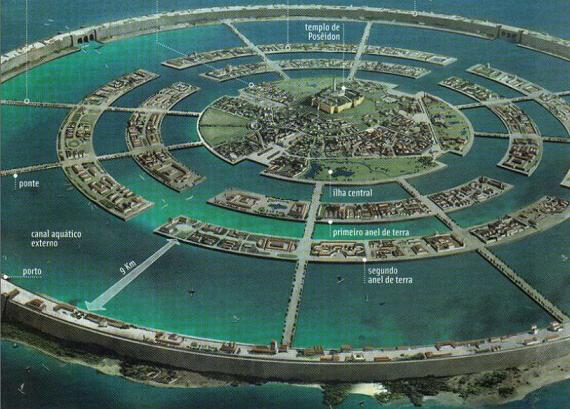

Se trataba supuestamente de un isla abundante en recursos minerales como el oricalco (cobre de montaña) y grandes bosques que proporcionaban ilimitada madera. Y su prosperidad les permitió a los atlantes construir grandes obras como una espléndida acrópolis rodeada de círculos de agua, templos, palacios, puertos y astilleros, además de un gran canal de 50 estadios de longitud, para comunicar la costa con el anillo de agua exterior que rodeaba la metrópolis; y otro menor y cubierto, para conectar el anillo exterior con la ciudadela, además de una gigantesca fosa emplazada en la llanura a partir de la cual partían una red de canales rectos que irrigaban todo el territorio de la planicie.